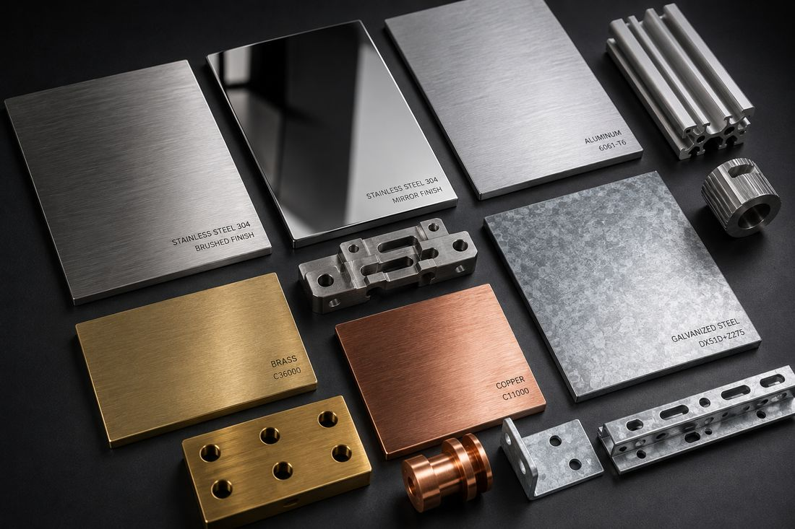
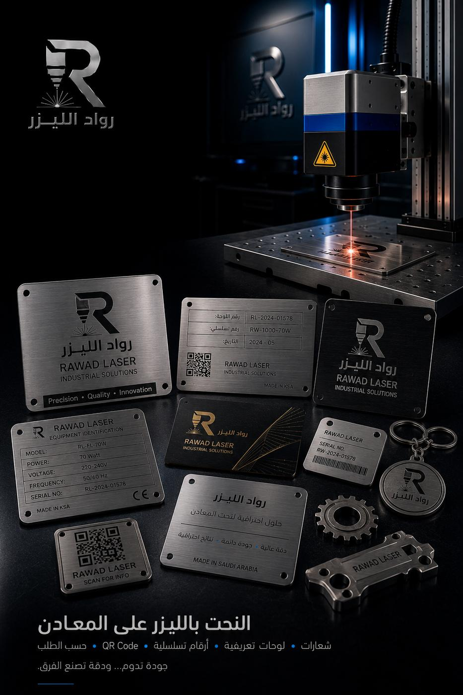

شعارات ولوحات فاخرة
شعار شركة أو لوحة اسم بلون ذهبي دافئ يمنح المدخل مظهراً مختلفاً عن الستانلس الرمادي.
النحاس والبراص أصعب المعادن قصاً: يعكسان الشعاع بشدة ويسحبان الحرارة بسرعة. ولهذا تُرفض هذه الطلبات في ورش كثيرة — بينما نتعامل معها بليزر الفايبر وإعدادات مخصّصة لكل سماكة.

النحاس معدن نقي بلون أحمر مائل للبرتقالي، وهو من أفضل الموصلات للكهرباء والحرارة، ويتغيّر لونه مع الزمن مكوّناً طبقة بتينة (زنجار) داكنة أو مخضرّة يعتبرها البعض عيباً ويعتبرها آخرون جمالاً مقصوداً في التصميم.
البراص (الأصفر) خليط من النحاس والزنك، لونه ذهبي أدفأ، وهو أصلب من النحاس النقي وأسهل في التشغيل والتلميع، ويحافظ على مظهره أطول قبل أن يبهت — لهذا يُطلب أكثر في اللوحات والديكور الداخلي والمقابض والشعارات.
المعدنان معاً يشتركان في تحدٍّ واحد أمام الليزر: الانعكاس العالي. ليزر الفايبر الحديث هو ما جعل قصّهما ممكناً وآمناً بجودة عالية، ومع ذلك يبقى ضبط الإعدادات لكل سماكة أمراً لا يُختصر — وأي تسرّع فيه يعني حافة خشنة أو انحراف في المسار.
شعار شركة أو لوحة اسم بلون ذهبي دافئ يمنح المدخل مظهراً مختلفاً عن الستانلس الرمادي.
زخارف إسلامية وهندسية مفرّغة للفواصل الداخلية والإضاءة المخفية والأسقف المستعارة.
الديكورات المعمارية المعدنيةشرائح توصيل وقواعد أطراف تحتاج توصيلية النحاس العالية ومقطعاً محدداً بدقة.
قطع فردية بتصميم خاص، يمكن دمج القص مع الحفر لإضافة الأسماء والتواريخ.
الحفر والنحت على المعادنشرائح تأطير وحواف كاونترات وتفاصيل نحاسية تعطي المقهى أو المتجر هويّة بصرية دافئة.
إعادة تصنيع قطعة نحاسية قديمة مفقودة أو تالفة بالاعتماد على قياساتها أو صورتها.
| الخاصية | النحاس | البراص |
|---|---|---|
| اللون | أحمر برتقالي دافئ يميل للدكنة مع الوقت. | ذهبي فاتح ثابت نسبياً وأقرب لمظهر الذهب. |
| التوصيل الكهربائي | الأعلى بين المعادن الشائعة عملياً. | أقل من النحاس بواقع ملموس. |
| الصلابة والتشغيل | أطرى، يتشوّه أسهل عند المناولة. | أصلب وأسهل في التلميع والتشطيب النهائي. |
| التقادم | يكوّن بتينة داكنة أو مخضرّة إن تُرك بلا حماية. | يبهت تدريجياً لكن يحافظ على لونه أطول. |
| الحماية الموصى بها | طبقة لاكيه شفافة إن أردت الحفاظ على اللمعان. | لاكيه أو تلميع دوري خفيف حسب الاستخدام. |
أرسل السماكة والمقاس المطلوب ونؤكد لك القابلية والتوفر والسعر قبل البدء — المعادن العاكسة تحتاج تأكيداً مسبقاً لكل طلب.

نحاس وبراص
لوحات وشعارات زخارف مفرّغة
زخارف مفرّغةالصور نماذج وتصورات بصرية توضح إمكانيات الخدمة.
تفاصيل نحاسية دقيقة تصنع الفرق في مشروع فاخر: تأطير، فواصل، وشرائح إضاءة.
شعارات وعناصر ديكور تمنح الهوية البصرية دفئاً لا يعطيه المعدن الرمادي.
قطع توصيل ومقاطع نحاسية بمقاسات مضبوطة لتطبيقات نقل التيار.
قطعة واحدة بتصميم خاص: هدية، درع، أو لوحة تذكارية بمعدن مميز.
نقش أسماء وتواريخ وشعارات على القطع النحاسية بتباين واضح ودائم.
اذهب إلى الصفحةفواصل وزخارف مفرّغة تُنفَّذ بالنحاس أو الستانلس أو الحديد المطلي.
اذهب إلى الصفحةبديل أخفّ وأوفر إن كان المطلوب مظهراً معدنياً دون تكلفة النحاس.
اذهب إلى الصفحةلأن الانعكاس العالي للنحاس كان يمثّل خطراً على المعدات القديمة، ولأن ضبط الإعدادات يحتاج وقتاً وخبرة لكل سماكة. ليزر الفايبر الحديث حلّ الجزء التقني، ويبقى الجزء المتعلق بالخبرة — ونحن نقبل هذه الطلبات ولا نحوّلها لغيرنا.
نعم بطبقة حماية شفافة (لاكيه) تُطبَّق بعد التلميع، وتؤخّر تكوّن البتينة سنوات في الاستخدام الداخلي. أما في الخارج فتكوّن البتينة أمر طبيعي ويحتاج صيانة دورية إن أردت منعه.
نعم، ولا يوجد حد أدنى للكمية. كثير من طلبات النحاس تصلنا كقطعة واحدة لهدية أو لوحة أو ترميم قطعة قديمة، ونتعامل معها بنفس الاهتمام.
يمكن استخدامه خارجاً لكنه سيبهت ويتغيّر لونه تدريجياً في الجو الساحلي المالح. إن كان المظهر الثابت أهم من المعدن نفسه، فالستانلس 316 خيار أطول عمراً — ونقول لك ذلك بصراحة قبل أن تدفع.
وضّح المعدن (نحاس أو براص) والسماكة والمقاس والتشطيب المطلوب، وأرفق صورة مرجعية إن توفّرت.
نحاس أو براص، قطعة واحدة أو كمية — أرسل التفاصيل واحصل على سعر واضح.